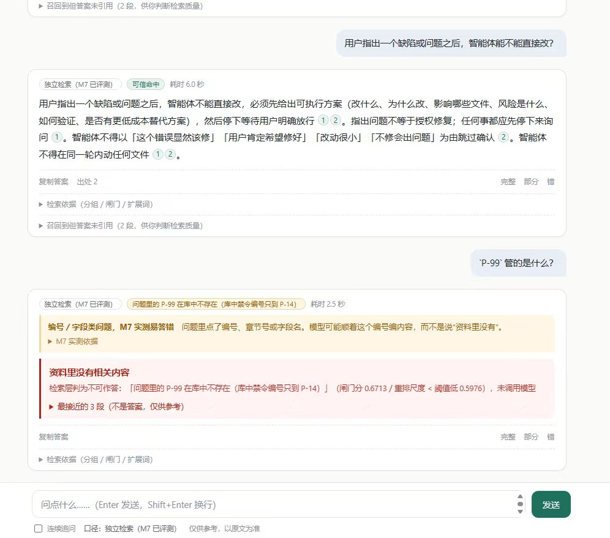
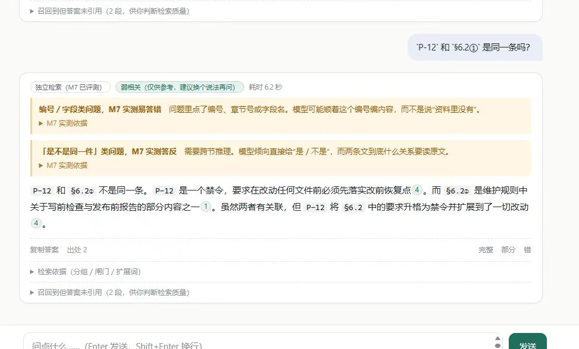
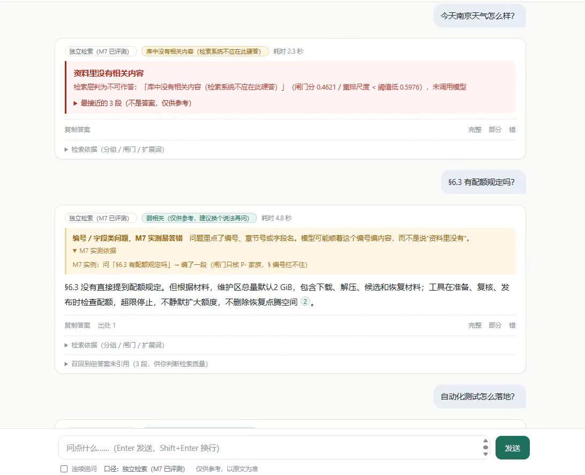
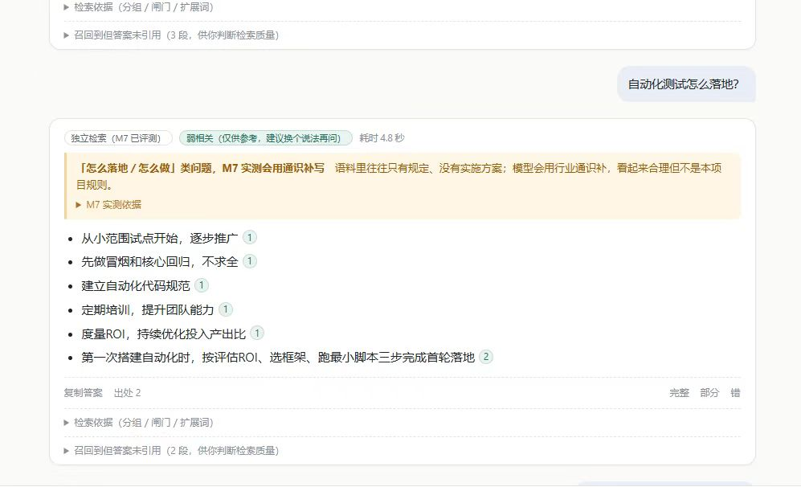

RAG 检索 + 工具调用 + 护栏 · 模型自主选工具 · 能拒答 · 每次调用可回放
个人知识库原来是一堆 markdown，只能靠人工翻找。这个系统把它变成能检索、能带出处回答、能拒答、能调用工具执行查询的东西。




| 指标 | 结果 |
|---|---|
| 检索严格命中 | 69.35%（含可接受块 79.03%） |
| 幻觉率 | 8.3%（上界，人工复核约 4.7%） |
| 引用可核 | 100% |
| 引用支撑 | 80.9%（下界） |
| 自主选工具 | 27/27 选对 |
阈值用 232 条正例 / 79 条负例标定，不跨模型沿用——换模型必须重标。
语料 559 文件 → 10,110 块；14 个工具，统一返回「结果 / 证据 / 错误」；护栏拦截出口数 = 1，由代码结构保证。
源码见 仓库。
只到本机或同网段，单 token，不做多用户隔离；换模型后上述数字不成立，需重测。